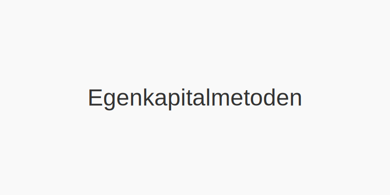

Egenkapitalmetoden er en regnskapsmetode som benyttes for investeringer i tilknyttede selskaper og felleskontrollert virksomhet (joint ventures). Metoden gir et mer rettvisende bilde av investeringens verdi ved å reflektere investorens andel av resultat og egenkapital i målforetaket.

Hva er egenkapitalmetoden?
Egenkapitalmetoden blir brukt når en investor har betydelig innflytelse, men ikke kontroll, over et annet foretak. Dette innebærer vanligvis en eierandel på mellom 20 % og 50 % av stemmerettighetene.
- Betydelig innflytelse: Investor deltar i beslutninger om finansiell og driftsmessig politikk.
- Ingen kontroll: Investor styrer ikke foretakets overordnede retning.
Metoden skiller seg fra kostmetoden ved at investeringen måles i takt med målforetakets egenkapitalendringer.
Når brukes egenkapitalmetoden?
| Eierandel | Betegnelse | Regnskapsmetode |
|---|---|---|
| < 20 % | Minimal innflytelse | Kostmetoden |
| 20 %–50 % | Betydelig innflytelse | Egenkapitalmetoden |
| > 50 % | Kontroll (konsern) | Konsolidering |
Regnskapsføring med egenkapitalmetoden
Regnskapsføringen deles i to hovedtrinn:
- Innledende innregning – Investeringen innregnes til anskaffelseskost.
- Etterfølgende måling – Verdien justeres ved andel av målforetakets resultat og utbytte.
Etterfølgende måling
| Hendelse | Bokføring i investorens regnskap |
|---|---|
| Andel av resultat i målforetaket | Øker investering (± Resultatandel) |
| Utbytte mottatt fra målforetaket | Reduserer investering (– Mottatt utbytte) |
Eksempel på bokføring
La oss anta at investor A eier 30 % av aksjene i selskap B. B oppnår et årsresultat på 1 000 000 NOK og utbetaler 200 000 NOK i utbytte.
| Dato | Konto | Debet (NOK) | Kredit (NOK) |
|---|---|---|---|
| 31.12 År 1 | Investering i tilknyttet selskap | 300 000 | |
| Resultatandel tilknyttet selskap | 300 000 | ||
| 20.01 År 2 | Bankkonto | 60 000 | |
| Investering i tilknyttet selskap | 60 000 |
Forklaring:
- Årsresultat × 30 % = 1 000 000 × 0,30 = 300 000 NOK.
- Utbytte × 30 % = 200 000 × 0,30 = 60 000 NOK.
Sammenligning med andre metoder
| Metode | Måling ved anskaffelse | Etterfølgende måling |
|---|---|---|
| Kostmetode | Kostpris | Uendret (kun nedskrivning ved verdifall) |
| Egenkapitalmetoden | Kostpris | Justeres for andel av resultat og utbytte |
| Konsolidering | Justert balanse | Full konsolidering av balanse og resultat |
Regnskapsstandarder
Egenkapitalmetoden er beskrevet i:
- NRS 8 – Arbeidsgruppekontrollert virksomhet og tilknyttede foretak
- IFRS IAS 28 – Investments in Associates and Joint Ventures
Fordeler og ulemper
Fordeler:
- Gir et mer korrekt bilde av investert kapital over tid
- Reflekterer investorens andel av resultat
Ulemper:
- Krever detaljert informasjon fra målforetaket
- Kan gi kompleks rapportering ved flere tilknytninger
Relaterte artikler
Artikkelen er sist oppdatert: {{ lastReviewed | date(“YYYY-MM-DD”) }}